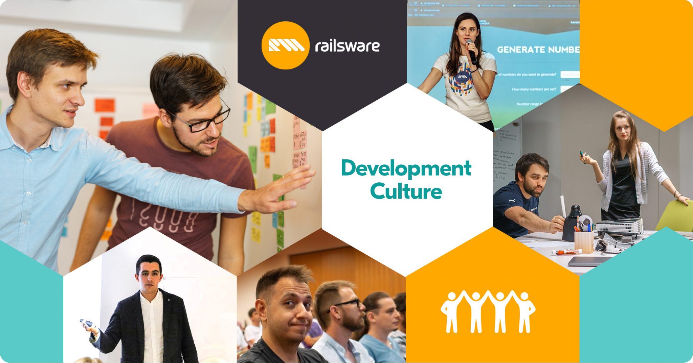

To bring out Data Democratization Data democratization means that everybody has access to data and there are no gatekeepers that create a bottleneck at the gateway to the data. It requires that we accompany the access with an easy way for people to understand the data so that they can use it to expedite decision-making and uncover opportunities for an organization. The goal is to have anybody use data at any time to make decisions with no barriers to access or understanding
An organization that truly wants to democratize data needs to embrace the following principles (referred to as the trifecta of data democratization throughout this guide):
Empower employees to feel comfortable asking data-related questions
Provide the right tools to enable everybody to work with data
Perceive democratization of data as an ongoing process which might even require an organization-wide cultural shift
To develop Digital Team business The Digital Business team is at the forefront of leveraging technology to drive innovation and efficiency within our organization. Comprising a diverse group of experts in digital strategy, data analytics, and technology implementation, the team is dedicated to transforming traditional business processes through cutting-edge digital solutions. By harnessing the power of data and advanced analytics, they provide actionable insights that enable smarter decision-making and foster a culture of continuous improvement. Their efforts in developing and integrating digital tools streamline operations, enhance customer experiences, and open new avenues for growth.
With a focus on agility and adaptability, the Digital Business team ensures that our organization remains competitive and forward-thinking in an ever-evolving digital landscape. They are instrumental in identifying and implementing emerging technologies, such as artificial intelligence, blockchain, and the Internet of Things (IoT), which drive digital transformation and create value across all business functions. Through close collaboration with various departments, they ensure seamless integration of digital initiatives, fostering a cohesive and unified approach to achieving organizational goals. Their commitment to continuous learning and staying abreast of industry trends positions them as trusted advisors and leaders in driving digital innovation.
To develop and promote Digital Culture within the Company  Developing and promoting a digital culture within the company is paramount to our long-term success and innovation. This initiative is driven by a dedicated team of digital transformation leaders who are passionate about embedding a digital-first mindset across all levels of the organization. By fostering a culture that values continuous learning, experimentation, and agility, the team empowers employees to embrace new technologies and digital tools in their daily work. They champion the importance of digital literacy, ensuring that every team member has the skills and confidence to leverage digital solutions for enhanced productivity and creativity.
Through a series of targeted training programs, workshops, and collaborative projects, the team encourages a spirit of innovation and collaboration, breaking down silos and promoting cross-functional synergy. They also emphasize the significance of data-driven decision-making, equipping employees with the knowledge and resources to harness data effectively. By creating a supportive environment where new ideas are encouraged and digital initiatives are recognized and rewarded, the team is instrumental in cultivating a culture that is not only adaptive to change but also proactively drives digital transformation. Their efforts ensure that the company remains at the cutting edge of industry advancements, continually evolving to meet the demands of a dynamic digital landscape.
Optimal Upgradation of Technology Optimal upgradation of technology is a critical focus for our organization, ensuring that we remain competitive and efficient in an ever-evolving digital landscape. This initiative is led by a team of technology experts dedicated to evaluating, selecting, and implementing the most advanced and appropriate technological solutions. Their mission is to continuously enhance our infrastructure, systems, and tools to meet current and future business needs. By conducting thorough assessments and staying abreast of the latest technological trends, the team ensures that our technology stack is robust, scalable, and aligned with industry best practices.
The team emphasizes a strategic approach to technology upgrades, prioritizing solutions that deliver maximum value and efficiency. They work closely with various departments to understand their unique requirements and challenges, ensuring that new technologies are seamlessly integrated into existing workflows. This collaborative approach minimizes disruptions and maximizes the benefits of technological advancements. Additionally, the team is committed to maintaining rigorous standards of cybersecurity and data protection, safeguarding our operations against potential threats.
Through continuous monitoring and proactive maintenance, the team ensures that our technology remains up-to-date and fully optimized. They also provide comprehensive training and support to ensure that employees can effectively utilize new tools and systems. By fostering a culture of innovation and continuous improvement, the team drives the organization towards greater operational excellence and positions us to capitalize on new opportunities in the digital age. Their efforts are essential in maintaining our technological edge and ensuring long-term success.